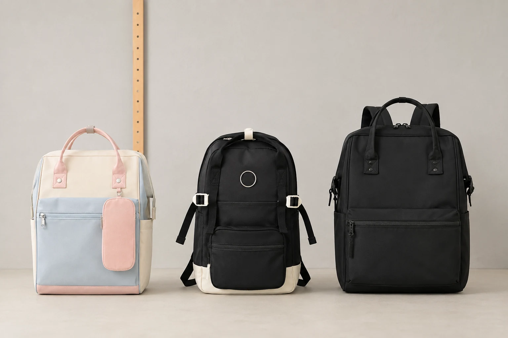

백팩을 고르기 전에 하루의 짐 펼쳐보기

백팩을 고를 때 좋아 보이는 후보가 여러 개면 제품 이름과 칸 수를 계속 비교하게 됩니다. 그런데 어느 정보가 필요한지 자신의 짐을 펼쳐보면 질문이 달라집니다. 큰 파일을 매일 가져가는 사람은 입구가 중요하고, 작은 소지품을 자주 꺼내는 사람은 위치와 여닫는 동작을 먼저 볼 수 있습니다. 하나의 좋은 백팩 기준을 모든 사람에게 적용하기보다 평소의 하루에서 반드시 이어져야 할 동작을 정해볼 만합니다.
최근 자주 가져간 물건을 한 곳에 놓고 크기와 사용하는 시점을 봅니다. 매일 담는 큰 물건과 반복해서 꺼내는 작은 물건, 특정 일정에만 더하는 짐을 구분합니다. 이름만 적은 목록보다 실제 외형을 보면 파우치나 케이스까지 포함한 부피가 보입니다. 오늘만 필요한 짐이 계속 남아 있었다면 새 가방의 크기를 고르기 전에 보관 장소를 다시 정할 수 있습니다. 현재 짐의 범위가 분명해야 제품에서 필요한 정보를 찾기 쉽습니다.
가장 큰 물건이 지나갈 입구
파일이나 기기를 담는다면 실제 크기와 넣는 방향을 기록합니다. 외부 크기와 내부 공간, 입구는 구분해서 읽어야 합니다. 가방 안쪽이 넓다는 설명만으로 매일 넣고 꺼낼 동작이 편한지 알 수는 없습니다. 케이스나 파일의 여밈까지 포함한 외형을 보고 제품의 사진과 설명에서 어느 부분을 확인할지 정합니다. 정보가 없으면 물건의 치수를 전달하고 내부나 입구의 조건을 문의할 수 있습니다. 화면 인치나 종이 규격 이름에만 의존하지 않는 방식입니다.
큰 물건을 넣은 뒤에는 주변의 작은 짐이 어느 면에 닿는지 봅니다. 단단한 충전 도구와 용기, 개인 파우치를 넣고 나서도 파일을 바로 꺼낼 수 있는지 확인하세요. 기기만 들어가는 결과와 하루의 모든 짐을 담는 결과는 다를 수 있습니다. 제품에 안내된 수납 구조가 있다면 그 범위에서 사용 조건을 대조합니다. 사진에서 나뉜 공간이 보인다고 특정 기기의 호환이나 보호 성능을 덧붙여 판단하지 않습니다.
자주 꺼내는 물건은 개수보다 돌아갈 위치를 생각합니다. 열쇠와 교통카드, 연락 도구를 한 묶음으로 둘지 각각 다른 곳에 둘지는 실제 사용 순서에 따라 정할 수 있습니다. 칸이 많으면 분류할 선택지는 늘지만 같은 모양의 파우치가 깊이 겹칠 수도 있습니다. 출발 전에 필요한 묶음만 꺼내보는 과정이 도움이 됩니다. 가방의 모든 면을 열지 않아도 찾을 수 있는지와 사용 뒤 같은 자리에 넣을 수 있는지를 함께 확인하면 됩니다.
백팩 후보의 예시로 Himawari No.1884 제품 정보를 살펴볼 수 있습니다. 이 제품의 외부 크기는 가로 30 × 세로 45 × 폭 20cm입니다. 자신의 파일이나 기기 외형을 기준으로 추가로 확인할 내부 정보와 입구 조건을 정합니다. 업무 도구 외에 개인 짐을 더한다면 실제 묶음을 함께 대조하세요. 제품명에 적힌 용도는 정보를 읽는 출발점이고, 현재 소지품이 어떤 상태로 들어갈지는 구체적으로 확인해야 할 질문입니다.

짐을 넣고 메고 내리기
착용을 확인할 수 있다면 평소 짐과 옷차림으로 메어봅니다. 제품의 조절 방법을 읽고 끈이 비틀리거나 내용물이 한쪽에 몰린 곳이 있는지 봅니다. 다른 사람의 착용 사진에서 보이는 높이를 자신의 기준으로 바로 옮길 필요는 없습니다. 직접 메었을 때 닿는 면과 움직이는 동작을 관찰하고 무엇이 불편한지 구체적으로 알아두면 됩니다. 빈 상태에서의 인상과 실제 짐을 담은 상태를 구분하면 후보를 평가할 조건이 분명해집니다.
가방을 내리고 몸 앞에서 여는 동작도 해볼 수 있습니다. 지하철이나 수업, 사무실에서 어느 순간 이 동작을 쓰는지 생각하세요. 어깨에서 내릴 때 옷이나 머리카락에 걸리는 부분이 있는지, 다시 멜 때 손에 다른 짐이 남는지도 확인합니다. 가방을 받칠 자리 없이 자주 열어야 하는 사람과 책상에 두고 쓰는 사람은 필요한 동작이 다를 수 있습니다. 메고 있는 모습만으로 선택하기보다 실제 사용 순서를 같이 보면 됩니다.
마감은 직접 보이는 부분부터 살핍니다. 연결부와 바닥, 여밈의 현재 상태를 확인하고 잘 움직이지 않는 곳이 있으면 판매자에게 문의합니다. 꼼꼼해 보인다는 인상과 내구성 수치는 구분할 정보입니다. 보이지 않는 성능을 눈으로 확인했다고 정하지 않고 제품이 제공한 설명의 범위에서 읽습니다. 문의할 때는 어떤 부위가 궁금한지 사진과 함께 남기면 됩니다. 관리와 수선 안내가 있는지도 앞으로 사용할 조건으로 확인할 수 있습니다.
계속 쓰고 싶은 형태
디자인은 자주 입는 옷과 사용하는 장소를 함께 놓고 생각합니다. 후보 사진을 한 장씩 보기보다 실제로 반복하는 옷차림에 연결해볼 수 있습니다. 색과 장식이 마음에 들더라도 짐을 담았을 때의 외형이 달라질 수 있으므로 그 조건도 확인합니다. 모든 장소에서 같은 가방을 쓸 계획이라면 사용 비중이 큰 장면부터 비교하고, 특정 날 다른 가방을 쓰는 선택도 가능합니다. 익숙한 색만 정답으로 두지 않고 계속 사용할 조합을 생각하면 됩니다.
온라인 정보만으로 결정해야 한다면 확인되지 않은 질문을 구체적으로 남깁니다. 내부 치수와 입구, 기기와 케이스의 조건, 실제 구성 가운데 무엇이 부족한지 구분합니다. 판매자가 제시한 정보가 같은 모델과 옵션인지도 대조하세요. 주문 전에는 현재의 배송과 확인, 교환 관련 안내를 읽고 필요한 조건을 알아둘 수 있습니다. 제품을 고른다는 것은 모든 질문을 없애는 일이 아니라 실제 사용에 중요한 질문을 확인하는 과정입니다.
후보를 좁힌 뒤에도 현재 가방에서 불편했던 이유를 다시 봅니다. 파일이 걸렸는지, 작은 물건이 섞였는지, 짐을 담은 뒤 움직임이 달라졌는지에 따라 선택할 조건이 다릅니다. 새 가방이 해결해주기를 바라는 부분을 하나씩 실제 정보와 대조하면 불필요한 크기와 기능을 더하지 않아도 됩니다. 평소의 짐과 반복하는 동작, 관리할 조건이 연결된 후보라면 왜 그 제품을 남겼는지 스스로 설명할 수 있는 기준이 생깁니다.